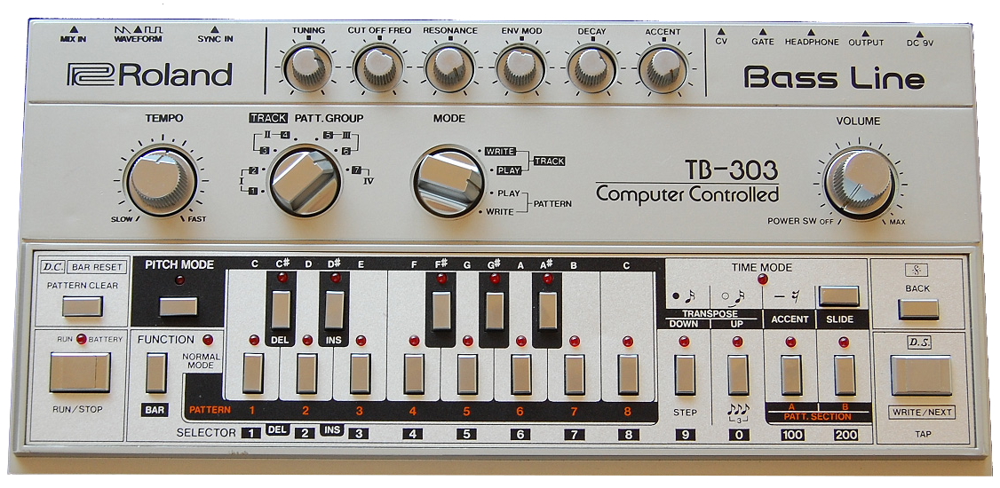
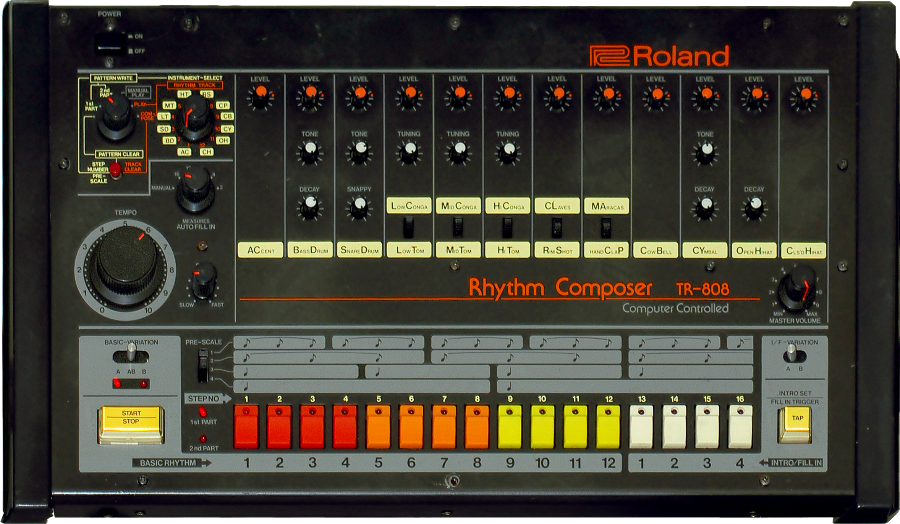

Elements of dance music
or, How to make people dance with maths
Paul Adenot (@padenot), Mozilla, SINFO 23


Today !
- What is music?
- Deconstruction of an acid techno track.
- Rich audio on the web ?
- Web Audio Primer
- Actually doing it live !
- ... ?
- ... !
- Dancing !
What is music?
My simpl(e|istic) definition.
Music = Rhythm + Melody + Timbre
Rhythm
The absense or presence of a sound at some point in time, and its duration.A note each beat for a quarter beat, 140 times a minute
Melody
A succession of pitched sounds that constitute a coherent unit.A4 - B4 - E4 - A3 - B3
Timbre
The instrinsic sonic characteristics of the sounds themselves.Harsh - pure - pitched - metallic - vocal - bowed
This talk focuses on timbre.
Acid what ?
Chicago & Detroit, ≈ 1990
Two machines can go far...
Roland TB-303
Bass synthetizer
Roland TR-808
Drum machine
Acid techno deconstruction
Why acid techno ?
- Sounds good (at least to me !)
- Simple to code !
- Kick, clap, maracas: TR-808 simulation
- Bass line: TB-303 simlation
The Web Audio API
This specification describes a high-level JavaScript API for processing and synthesizing audio in web applications […]
[…] The primary paradigm is of an audio routing graph, where a number of AudioNode objects are connected together to define the overall audio rendering. […]
[…] The actual processing will primarily take place in the underlying implementation (typically optimized Assembly / C / C++ code), but direct JavaScript processing and synthesis is also supported.
But … why ?
insert rant about JavaScript- Distribution mechanism
- Performance
- Ease-of-use
- Composability
Distribution mechanism
Performance
Ease-of-use
Composability
Web Audio API 101
AudioContext + AudioNode + AudioParam
var ac = new AudioContext

partial interface AudioContext {
readonly attribute AudioNode destination;
readonly attribute double currentTime;
// play audio buffers
AudioBufferSourceNode createBufferSource();
// change volume
GainNode createGain();
// play simple wave forms (sine, square, etc.)
OscillatorNode createOscillator();
// filter the sounds
BiquadFilterNode createBiquadFilter();
}
partial interface OscillatorNode {
AudioNode connect(AudioNode node);
void disconnect(AudioNode node);
readonly AudioParam frequency;
readonly AudioParam detune;
enum OscillatorType type;
void start(double startTime);
void stop(double stopTime);
}
partial interface AudioParam {
attribute float value;
void setValueAtTime(float value, double time);
void exponentialRampToValueAtTime(float value, double time);
void linearRampToValueAtTime(float value, double time);
void setTargetAtTime(float value, double time, float constant);
}
Basic waveforms
var osc = ac.createOscillator();
var gain = ac.createGain();
osc.type = "sine";
osc.frequency.value = 440.; // A4
input1.oninput = (e) => osc.frequency.value = e.target.value
input2.oninput = (e) => gain.gain.value = e.target.value
osc.connect(gain);
gain.connect(ac.destination);
osc.start();
Volume enveloppes
var osc = ac.createOscillator();
osc.frequency.value = 100;
var gain = ac.createGain();
osc.connect(gain);
gain.connect(ac.destination)
osc.start();
setInterval(function() {
gain.gain.setValueAtTime(1.0, ac.currentTime);
gain.gain.setTargetAtTime(0.0, ac.currentTime, 0.3);
}, 500);
Pitch and gain enveloppes: simple kick
var osc = ac.createOscillator();
var gain = ac.createGain();
osc.connect(gain);
gain.connect(ac.destination)
osc.start();
setInterval(function() {
gain.gain.setValueAtTime(1.0, ac.currentTime);
gain.gain.setTargetAtTime(0.0, ac.currentTime, 0.12);
osc.frequency.setValueAtTime(100.0, ac.currentTime);
osc.frequency.setTargetAtTime(45.0, ac.currentTime, 0.07);
}, 300);
Detuned sawtooth: bring in the bass!
var osc1 = ac.createOscillator();
var osc2 = ac.createOscillator();
osc1.type = "sawtooth";
osc2.type = "sawtooth";
osc1.frequency.value = osc2.frequency.value = 80;
input1.oninput = (e) => osc2.detune.value = e.target.value
input2.oninput = (e) => osc1.frequency.value = osc2.frequency.value = e.target.value
osc1.connect(ac.destination);
osc2.connect(ac.destination);
osc1.start();
osc2.start();
A brief excursion to the frequency domain
var osc = ac.createOscillator();
var gain = ac.createGain();
osc.type = "sine";
osc.frequency.value = 440.; // A4
input1.oninput = (e) => osc.frequency.value = e.target.value
input2.oninput = (e) => gain.gain.value = e.target.value
osc.connect(gain);
gain.connect(ac.destination);
osc.start();
Filtering the bass
var osc = ac.createOscillator(); var osc2 = ac.createOscillator();
var gain = ac.createGain();
var biquad = ac.createBiquadFilter();
osc.type = "sawtooth";
osc.frequency.value = osc1.frequency.value = 110.; // A2
osc2.detune.value = 30;
biquad.type = "lowpass";
input1.oninput = (e) => biquad.frequency.value = e.target.value
input2.oninput = (e) => biquad.gain.value = e.target.value
input3.oninput = (e) => biquad.Q.value = e.target.value
option.onchange = (e) => biquad.type = e.target.value
osc.connect(gain).connect(biquad).connect(ac.destination);
osc.start(); osc2.start();
Noise for the maracas
var source = ac.createBufferSource();
var buffer = ac.createBuffer(1, 1 * ac.sampleRate, ac.sampleRate);
var channel = buffer.getChannelData(0);
/* [-1, 1] */
for (var i = 0; i < channel.length; i++) {
channel[i] = Math.random() * 2 - 1;
}
source.loop = true;
source.buffer = buffer;
source.connect(ac.destination);
source.start();
Cheating for the clap...
fetch('clap.ogg').then((response) => {
response.arrayBuffer().then((arraybuffer) => {
ac.decodeAudioData(arraybuffer).then((buffer) => {
var source = ac.createBufferSource();
source.buffer = buffer;
source.loop = true;
source.connect(ac.destination);
source.start();
});
});
});
Time to alt-tab to a text editor!
Thanks !
(More or less) the live coded program in literate style:
https://padenot.github.io/litsynth
Search for "Synths secrets" to learn more about synthesis !
{Twitter, GitHub}: @padenot
<padenot@mozilla.com>